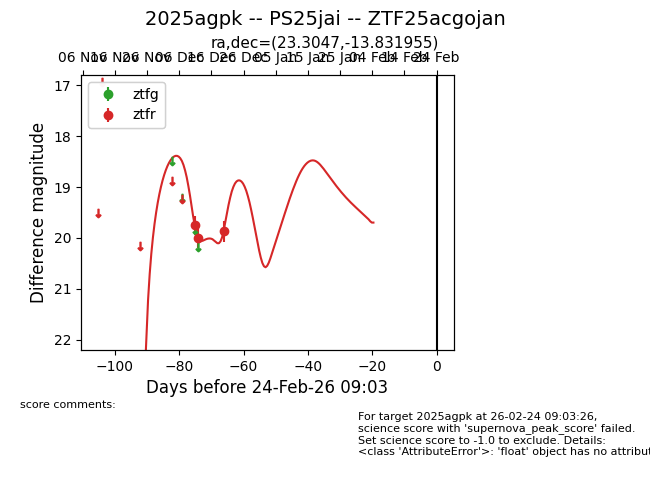
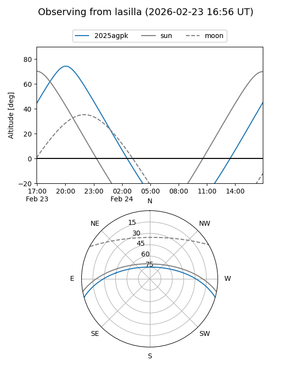
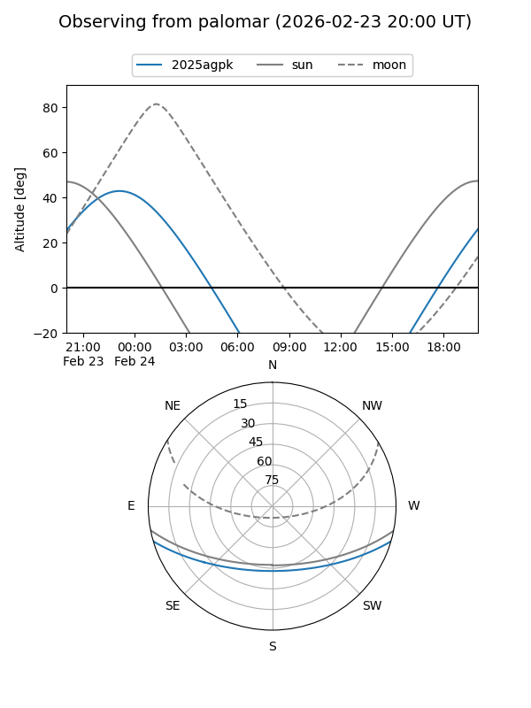
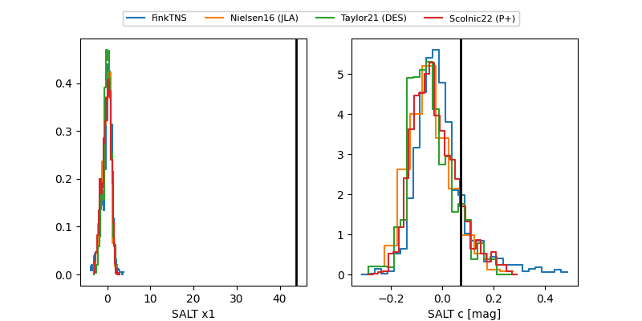

2025agpk
Target 2025agpk at 2025-12-31 18:01
Aliases and brokers:
FINK: link
Lasair: link
ALeRCE: link
TNS: link
YSE: link
alt names
ZTF25acgojan (ztf,fink_ztf)
2025agpk (tns,yse)
PS25jai (panstarrs)
Coordinates:
equatorial (ra, dec) = 23.3047,-13.83195
equatorial (HMS+DMS) = 01:33:13.12,-13:49:55.04
galactic (l, b) = (161.2635,-73.51081)
Flags:
Photometry:
last ztfr=19.87
3 ztfr detections
Lightcurve

Visibility


Additional plots
